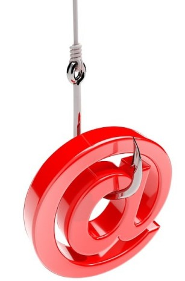

Phishing, ransomware, romance scams, and the billion-dollar ‘pig butchering’ operations targeting ordinary people worldwide — how the internet became the world’s most profitable crime scene.
“She sent him everything. Her savings. Her pension. Her children’s inheritance. He was never real. The compound in Myanmar was.”
Composite account — Global Anti-Scam Organisation case documentation, 2023Financial cybercrime is the broadest, most financially damaging, and in many ways most underreported category of internet crime. Its victims span every demographic, every country, and every income level. Its perpetrators range from lone amateur phishers to multinational organised criminal enterprises operating with the scale, structure, and professionalism of legitimate corporations.
The FBI’s Internet Crime Complaint Center (IC3) recorded $12.5 billion in losses from cybercrime in the United States alone in 2023 — a figure that represents only reported losses from victims who filed complaints. Actual losses are estimated to be several times higher. Globally, cybercrime costs are projected to reach $10.5 trillion annually by 2025 — a figure that would make it the world’s third-largest economy.
This report covers the major categories of financial cybercrime: phishing and its variants; ransomware; Business Email Compromise (BEC); romance scams and the ‘pig butchering’ operations that have industrialised them; and cryptocurrency fraud. It examines how each works, who is being targeted, and what can be done to reduce exposure.
Financial cybercrime is not a single activity but a spectrum of distinct operations, each with its own mechanics, target profile, and criminal infrastructure.
Fraudulent emails, SMS messages (smishing), or voice calls (vishing) designed to steal credentials, financial information, or install malware. Generic phishing casts a wide net; spear phishing is targeted, using personal information to appear legitimate. Business email compromise (BEC) — impersonating executives to redirect wire transfers — caused $2.9 billion in losses in the US in 2023 alone.
91% of attacks start hereLong-duration romance and investment scams in which victims are cultivated for weeks or months before being led into fake cryptocurrency investment platforms. The single fastest-growing and most financially devastating category — $4.4 billion in US losses in 2023. Operated by organised criminal networks, often using trafficked workers in Southeast Asian compounds.
Fastest growing — organised crimeMalware that encrypts a victim’s files or entire systems and demands cryptocurrency payment for the decryption key. Targets have expanded from individuals to hospitals, schools, municipalities, and critical national infrastructure. Average ransom demand exceeded $1.5 million in 2023. Some groups operate Ransomware-as-a-Service (RaaS) models, selling ransomware kits to affiliates for a revenue share.
Attacks on hospitals — life threateningAn attacker compromises or impersonates a business email account — typically an executive or finance officer — to authorise fraudulent wire transfers, redirect payroll, or steal sensitive data. BEC requires no malware and is difficult to detect because the fraud occurs through legitimate communication channels. It is the highest-loss category in absolute dollar terms in FBI reporting.
$2.9B US losses — BEC aloneCredentials stolen via phishing or purchased from dark web markets are used to access bank accounts, credit card platforms, and government benefit systems. Account takeover fraud — using stolen credentials to take control of existing accounts — has grown substantially as credential stuffing (trying large lists of stolen username/password combinations) becomes increasingly automated.
Mass-market — millions of victimsRug pulls (launching and abandoning cryptocurrency projects after raising funds), pump-and-dump schemes, fake exchanges, and NFT fraud. Cryptocurrency’s pseudonymity and irreversibility make it ideal for fraud and extremely difficult for victims to recover funds. The FTC estimated $1 billion was lost to cryptocurrency scams in 2023 in the US alone.
Blockchain-enabled — hard to reverse‘Pig butchering’ — from the Chinese shā zhū pán, ‘fattening a pig before slaughter’ — is the most financially devastating form of online fraud targeting individuals. It combines the slow-burn psychological manipulation of romance fraud with sophisticated fake cryptocurrency investment platforms to extract victims’ life savings over weeks or months.
What makes pig butchering uniquely alarming is its industrial scale. These are not individual scammers — they are large operations, often run from fortified compounds in Myanmar, Cambodia, Laos, and the Philippines, staffed by hundreds or thousands of workers, many of whom have been trafficked and forced to work under threat of violence. The operations have org charts, quotas, training manuals, and shift systems.
Ransomware encrypts a victim’s files or entire systems and demands cryptocurrency payment — typically Monero or Bitcoin — in exchange for a decryption key. What began as an attack on individuals has evolved into a highly organised industry targeting hospitals, schools, governments, and critical infrastructure.
The Ransomware-as-a-Service (RaaS) model has industrialised the attack: criminal groups develop and maintain the ransomware and payment infrastructure, then license it to ‘affiliates’ who conduct the actual attacks in exchange for a revenue share. This lowered the technical barrier to entry dramatically, increasing the volume of attacks.
Major ransomware groups include LockBit (responsible for over 2,000 attacks before its 2024 disruption by Europol and the FBI), ALPHV/BlackCat, and Clop — each operating with professional support structures and victim negotiation teams. Following the 2021 Colonial Pipeline attack that shut down fuel supply to the US East Coast for six days, ransomware became a national security priority in the United States.
Phishing is the entry point for 91% of all cyberattacks. Understanding how it works is the foundation of financial cybercrime literacy — because even sophisticated ransomware deployments and BEC frauds typically begin with a phishing email.

An email impersonating a trusted institution (bank, Microsoft, Amazon, HMRC/IRS) directs the recipient to a convincing fake login page. Credentials entered are captured in real time and used immediately or sold on dark web markets. Modern phishing kits include reverse-proxy technology that allows attackers to bypass two-factor authentication in real time.
Unlike generic phishing, spear phishing uses researched personal information to appear highly credible. An email that references the recipient’s name, employer, a recent transaction, or a known contact is dramatically more effective. Executives are specifically targeted in ‘whaling’ attacks designed to authorise large fraudulent transfers.
Phishing via SMS (smishing) has grown significantly — text messages claiming a package cannot be delivered, or that a bank account has been frozen, drive victims to fake sites or fraudulent phone numbers. Vishing involves actual phone calls from convincing impersonators — increasingly powered by AI voice cloning technology that can replicate a known contact’s voice using publicly available audio samples.
The highest-loss variant: an attacker compromises an executive email account or creates a convincing spoofed address and instructs the finance department to wire funds to a new account ‘for an urgent acquisition’ or ‘supplier payment’. BEC requires no malware and is highly effective because it exploits existing trust relationships within organisations. FBI IC3 recorded $2.9 billion in BEC losses in 2023.
Large language models have dramatically lowered the technical barrier to producing convincing phishing content — error-free, contextually aware, and personalised at scale. AI-generated phishing emails show significantly higher click rates than manually crafted equivalents. Voice-cloning AI has been used in real fraud cases to impersonate executives and family members in live calls to authorise wire transfers.
Cryptocurrency’s properties — pseudonymity, speed, and irreversibility — make it the preferred payment method for cybercriminals and a uniquely damaging instrument of fraud. Once funds are transferred to a scammer’s wallet, recovery without law enforcement intervention is essentially impossible.
Developers launch a cryptocurrency or NFT project with a convincing whitepaper, social media presence, and celebrity endorsements. Once sufficient investment accumulates, they drain the liquidity pool and abandon the project. The token or NFT becomes worthless. Rug pulls generated over $2.8 billion in losses in 2022 according to Chainalysis.
A coordinated group accumulates a low-value token, then uses Telegram channels, Twitter/X, and influencer promotion to hype it. Retail investors buy in; the coordinators sell at peak price; the token collapses. The SEC has prosecuted several high-profile pump-and-dump cases involving celebrities paid to promote tokens without disclosing their financial interest.
Fraudulent cryptocurrency exchange apps — indistinguishable in appearance from legitimate services — are promoted on social media or app stores. Users deposit funds which are then inaccessible. Some fake exchanges allow small withdrawals to build trust before a ‘platform upgrade’ freezes all funds permanently. Google and Apple have repeatedly had to remove fraudulent crypto apps from their stores.
Impersonating prominent figures on social media to promote fake cryptocurrency giveaways: ‘Send 0.1 BTC and receive 0.5 BTC back.’ These scams generated over $80 million following a coordinated Twitter account hijacking of major accounts (Barack Obama, Joe Biden, Apple, Uber) in a 2020 attack. The simplicity and scale of returns make them persistently effective.
Cryptocurrency fraud losses by type — US (2023)
Most targeted victim demographics
FBI IC3 data represents only a fraction of actual losses — most victims never report, either from shame, lack of awareness of reporting channels, or hopelessness about recovery. Independent research suggests reported losses represent as little as 15–20% of actual cybercrime losses globally.
Financial cybercrime is largely preventable with appropriate security hygiene. The single highest-impact measures are consistent across virtually all attack types.
Test your knowledge on financial cybercrime and all other topics — 10 randomised questions, no time limit.
Take the Quiz →